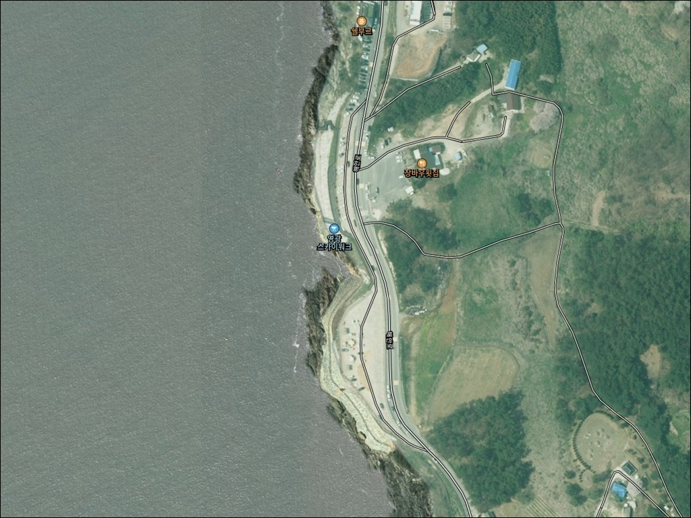
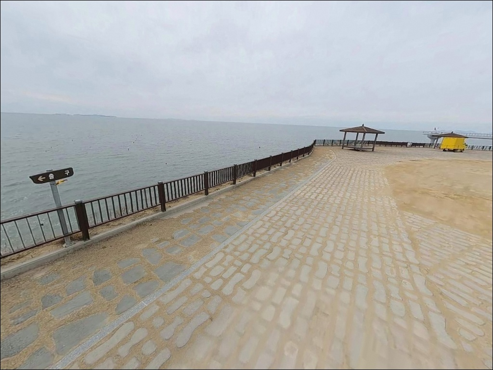
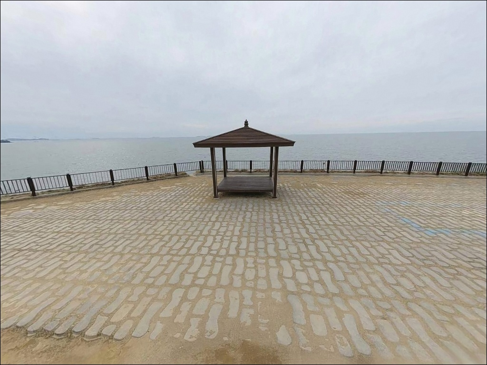
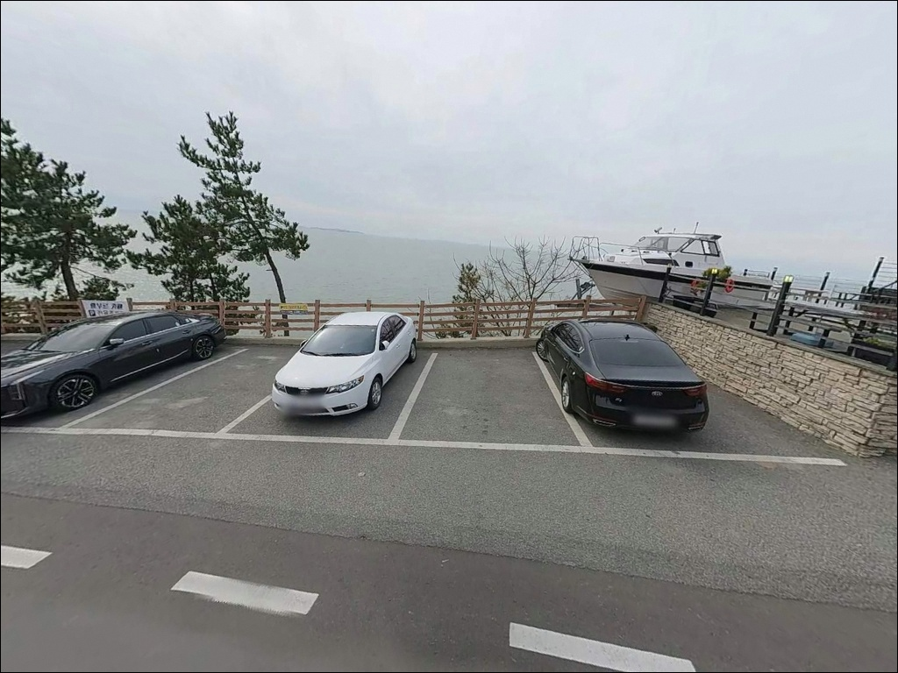
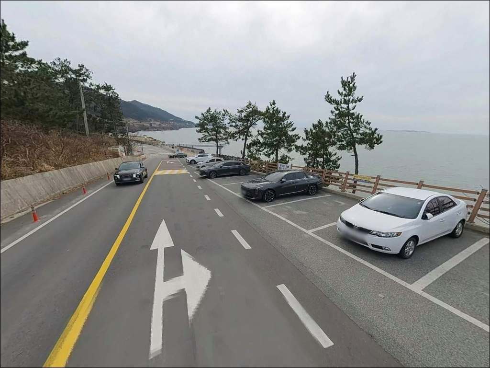
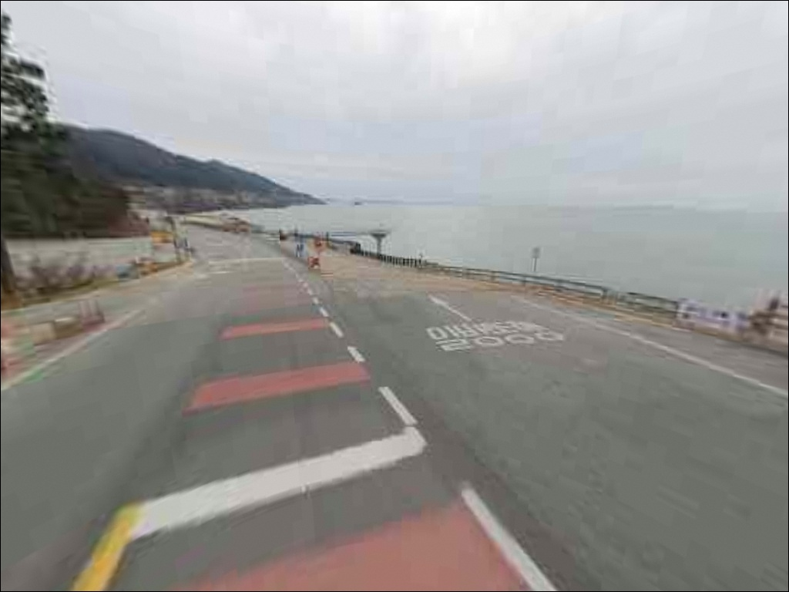
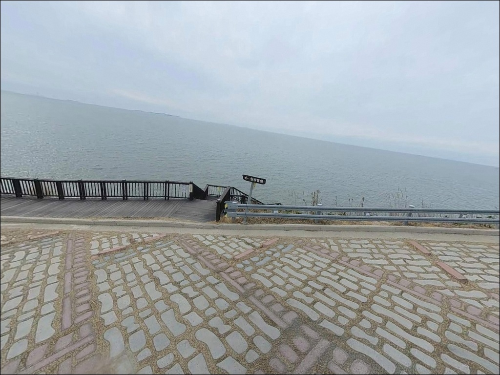
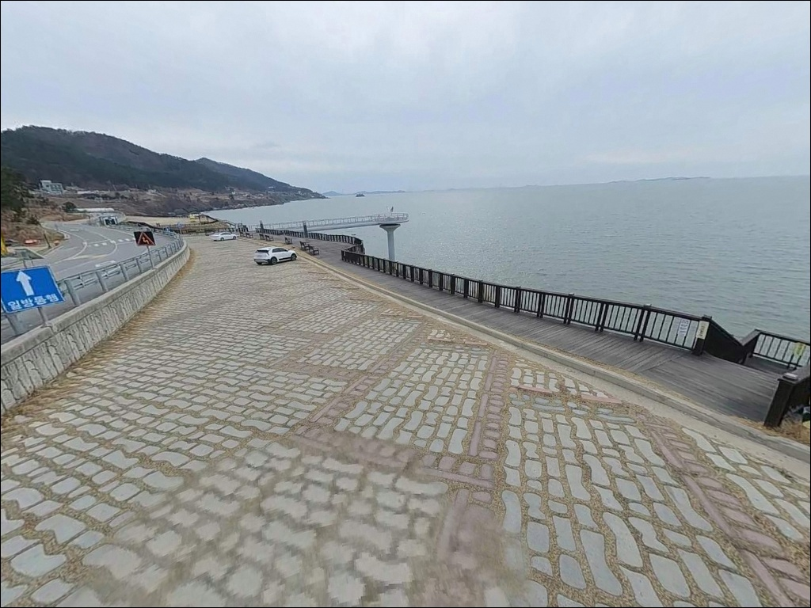
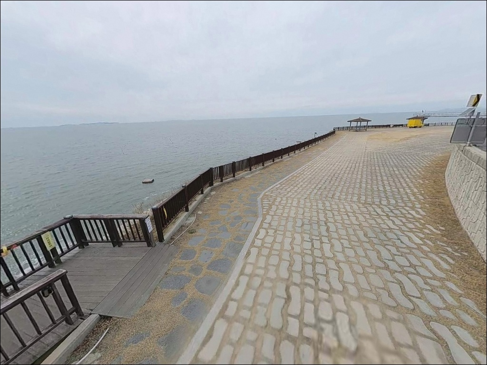

영광스카이워크, 전남 영광군 잔잔한 물결과 어울리는 차박, 낚시 한적한 포인트
이 페이지에는 광고(제휴 링크 포함)가 있으며, 광고 링크를 통해 구매하면 운영자가 판매 수익 또는 수수료를 받을 수 있습니다. 포인트 사진: 카카오맵 스카이뷰·로드뷰. 이 페이지의 지도·사진 이미지는 카카오맵의 실제 서비스 이미지와 다를 수 있습니다.


포인트 안내
영광스카이워크 (노을전망대 스카이워크)
전남 영광군 백수읍 대신리 790-6
서해 갯바위에서 물때 없이 자리를 잡으면
밀물이 올라오는 타이밍에 낚시 발판이 사라집니다.
백수해안도로 갯바위는 조수 간만의 차가 크기 때문에
간조와 만조 사이 시간대에 따라
진입 가능한 구간 자체가 달라지는 구조입니다.
물때를 먼저 계산하지 않은 방문은
낚시보다 철수가 빠른 출조로 끝납니다.
해안절벽 위 스카이워크 데크에서 직접 낚시하는 것은
구조상 불가합니다.
낚시는 절벽 아래 자연 갯바위 구간으로 내려가
이루어지는 방식이며,
서해 칠산바다 방향으로 트인
외해 노출형 갯바위 포인트입니다.
이 글은 영광스카이워크 인근 갯바위의
진입 환경과 낚시 여건,
차박 조건에 집중합니다.
조황 단정이나 특정 어종 보장은
이 글의 범위에 포함되지 않습니다.

1. 진입 동선과 포인트 접근성
영광스카이워크는 백수해안도로를 따라
차량으로 직접 접근하는 구조입니다.
해안도로는 커브 구간이 많고
일부 폭이 좁은 구간이 섞여 있으나,
관광지 시설이 자리한 구간이라
포장 상태는 양호한 편입니다.
대형 차량도 도로 진입 자체에는
큰 어려움이 없는 수준입니다.
주차는 스카이워크·노을전망대 전용 주차장을
우선 활용합니다.
입장료와 주차비 모두 무료이며,
백수해안도로를 따라
공영주차장 8곳이 조성되어 있어
만차 시 인근 주차지로 이동이 가능합니다.
노을전시관 인근 주차공간이
갯바위 접근 동선에서 가장 가까운 후보입니다.
낚시 자리까지는 차에서 내린 뒤
도보로 이동해야 합니다.
절벽 아래 갯바위로 이어지는 경사 구간이 있어
야간에는 개인 조명 없이 진입하기 어렵습니다.
낮 시간에 사전 진입 동선을 파악해 두는 것이
야간 낚시 안전의 기본 조건입니다.

2. 차박 환경 평가 및 야간 체류 여건
영광스카이워크 일대는 서해 노을 명소로
해질녘과 초저녁에 차량과 관광객이 집중됩니다.
조용한 단독 차박보다는
관광지형 체류에 가까운 분위기이며,
야간에도 전망대 주변 경관 조명이
있는 편입니다.
관광지 구역 내에서 지정 외 야영이나 취사는
제한 가능성이 있습니다.
낚시 후 하룻밤 머무는 용도라면
공영주차장 내 주차 후
차 안에서 체류하는 방식이 무난합니다.
취사 장비 사용 여부는
현장 관리 기준에 따라 달라집니다.
외해 노출 구조라 바람 영향을 받는 날이 있습니다.
서향으로 트인 해안선 특성상
바람이 강한 날에는 차박 환경이
불편해질 수 있어 출발 전
기상 예보 확인이 필수입니다.
인근 대안 주차지를 미리 확인해 두면
유연한 이동이 가능합니다.


3. 주변 편의시설 및 인프라 현황
노을전시관이 스카이워크와 함께 운영됩니다.
하절기(3월~10월)는 오전 10시에서 오후 6시,
동절기(11월~2월)는 오전 10시에서 오후 5시까지이며
월요일은 정기 휴무입니다.
문의는 061-350-5600으로 가능합니다.
스카이워크 자체는 연중무휴 24시간 개방이며
입장은 무료입니다.
인근에 카페가 운영 중이어서
간단한 식음료 이용은 가능합니다.
편의점이나 낚시 소품 전문 상점은
반경 내에서 확인된 정보가 없습니다.
낚시 채비, 얼음, 식재료, 연료는
출발 전에 완비하고 가는 것이 기본입니다.
반경 3km 이내에 캠핑 시설이 분포해 있어
물이나 취사 환경이 필요한 경우
이동해 활용하는 방식을 검토할 수 있습니다.
반경 10km권으로 범위를 넓히면
법성포 일대 식당과 생활 인프라를
이용할 수 있는 거리입니다.

4. 진입 전 반드시 챙겨야 할 준비사항
갯바위 낚시에서 가장 먼저 확인해야 할 것은
물때입니다.
바다타임에서 영광 백수읍 기준 물때를 확인하고
간조 전후 시간대를 중심으로
출발 시각을 맞추는 것이 기본입니다.
조수 간만의 차가 큰 서해 갯바위는
만조 타이밍에 낚시 발판이 사라지는 구조입니다.
구명조끼는 갯바위 낚시 시 반드시 착용합니다.
절벽형 해안 갯바위는 조류에 젖은 이끼가 덮여 있어
갯바위 전용 신발 없이는
미끄럼 위험이 큰 지형입니다.
야간에 갯바위로 내려갈 계획이라면
헤드랜턴은 필수 장비입니다.
기상 확인도 출발 전에 완료해야 합니다.
외해 직면 구조의 갯바위는
너울이나 돌풍에 취약합니다.
기상청 풍랑 예보를 당일 아침에
한 번 더 확인하는 것이
갯바위 진입 판단의 마지막 기준입니다.

5. 갯바위 지형 기반 낚시 여건 분석
영광스카이워크 아래는 백수해안도로 특유의
기암·절벽 해안선이 이어지는 구간입니다.
자연 암반과 여밭이 발달한 갯바위 지형으로
수중에도 바위와 해조류가 혼재하는 구조입니다.
갯바위 앞쪽 수심 변화 구간에
조류 흐름에 따라 어류 활동 구간이 형성됩니다.
백수해안도로 갯바위는
서해 칠산바다와 직면한 외해 노출 구조로,
조수 간만의 차에 따라
진입 가능한 구간 자체가 달라집니다.
간조 시에는 자연 갯바위가 드러나
넓은 발판이 확보됩니다.
들물 시간대에 갯바위 주변 조류 흐름이 살아나며
이 타이밍에 연안 어종의 활동성이
높아지는 경향이 있습니다.
근거리 바닥은 걸림이 잦을 수 있어
채비를 멀리 보내는 방식이
이 지형에 맞습니다.
가기 전에 영광 백수 갯바위 낚시 조황은
꼭 검색해 보시기 바랍니다.


6. 포인트에 어울리는 낚시 스타일
갯바위 원투낚시는 이 지형에 가장
자연스럽게 맞는 스타일입니다.
절벽 아래 외해 방향으로 캐스팅하면
조류를 타는 흐름 속에서
우럭, 노래미, 붕장어 같은
바닥 연안 어종을 노릴 수 있는 지형 조건입니다.
근거리 바닥 걸림이 잦으므로
채비를 멀리 보내는 것이 기본입니다.
루어낚시도 이 구간에 잘 맞는 선택지입니다.
여밭이 발달한 갯바위 주변을 따라
이동하며 록피시 계열 어종을 노리는
워킹 방식이 이 지형에 어울립니다.
들물 타이밍에 조류 흐름이 생기는 구간을
중심으로 탐색하는 방식이 유효합니다.
감성돔 찌낚시도 여밭이 발달한
갯바위 포인트에서 시도해 볼 수 있습니다.
수중 바위 경계선 부근을 노리는
흘림 찌채비가 이 지형에 맞는 방식입니다.
조류가 살아 있는 들물 구간에 집중하는 것이
이 포인트에서 찌낚시를 운용하는 기본 조건입니다.
영광스카이워크 일대 갯바위 낚시는
물때 확인이 조과보다 먼저인 포인트입니다.

7. 대안 포인트와 플랜 B 동선
영광스카이워크 인근 갯바위 여건이 맞지 않거나
조류가 너무 강할 때는
대신항 방파제가 첫 번째 이동 후보입니다.
갯바위보다 발판이 안정적인 방파제 구조이며,
원투낚시와 찌낚시를 병행하기 좋은 환경입니다.
처음 이 권역을 찾는다면
대신항을 먼저 파악하고 갯바위를 탐색하는
순서가 효율적입니다.
법성포항은 반경 10km 이내의 대안 포인트입니다.
방파제 구조로 접근성이 편하고
주변에 식당과 인프라가 갖춰진 항구 구조입니다.
갯바위 낚시에 익숙하지 않다면
법성포항을 먼저 공략한 뒤
스카이워크 일대를 탐색하는 동선이
이 권역을 처음 방문하는 데 효율적입니다.
계마항도 영광 낚시 권역에서
빠지지 않는 대안입니다.
영광 최대 규모의 어항으로
진입과 주차 여건이 안정적이며
다양한 낚시 스타일을 운용할 수 있는
방파제 구조입니다.
스카이워크 갯바위 여건이
기대에 미치지 못할 때
이동 거리 대비 가장 현실적인 후보입니다.

물때 하나 확인하면
영광 갯바위가 달라 보입니다
갯바위 원투낚시나 루어낚시를 즐기는 낚시인이라면
백수해안도로의 기암 갯바위 지형은
탐색해볼 만한 서해 남부 포인트입니다.
스카이워크에서 바라보는 칠산바다 노을이
더해지니 낚시 외 요소도 충분한 곳입니다.
다만 서해 갯바위 특성상
물때 계산 없이 내려가면
안전과 낚시 여건 모두
기대에 미치지 못하는 상황이 됩니다.
물때 확인, 구명조끼 착용, 진입로 사전 파악,
이 세 가지를 갖추고 간다면
갯바위 낚시로 기억에 남을 출조가
될 수 있는 포인트입니다.
차박을 함께 계획한다면
관광지형 분위기를 감안해
소음과 불빛에 대한 기대치를 미리 조율하는 것이 좋습니다.
노을 감상을 마친 뒤 갯바위 낚시로 밤을 보내는
조합이라면 영광스카이워크 일대가
서해 남부에서 독특한 선택지가 될 것입니다.